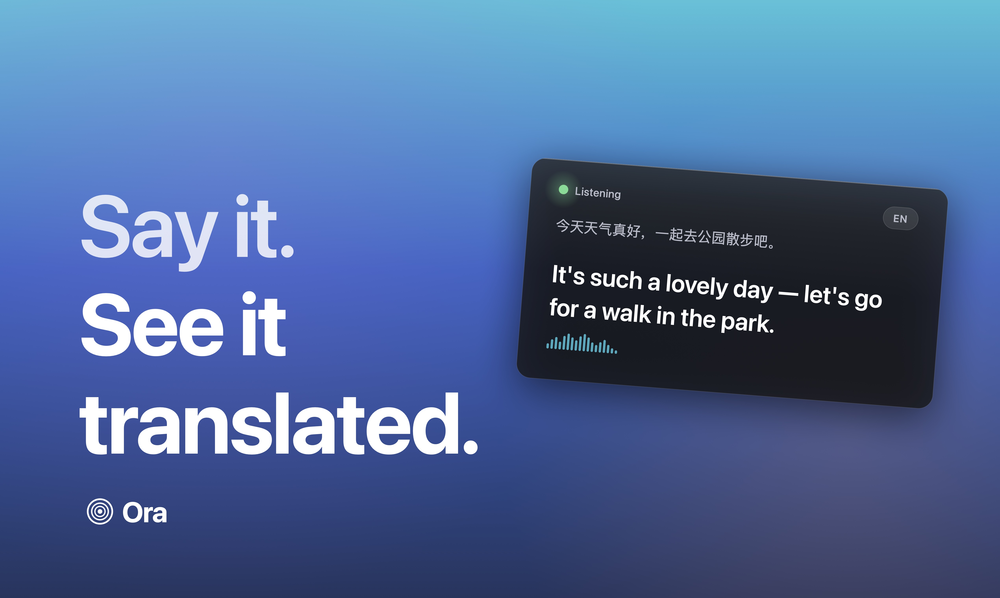

Every inference stage — voice activity detection, speech recognition, translation — runs on-device. Zero external servers.
Rolling partials stream into the caption card while you're still talking. By the time you pause, the sentence is committed.
Airplane, subway, mountain trail — Ora works wherever your Mac does.
Verify with Little Snitch. There's nothing outbound.
On-device LLM tuned for streaming captions — handles idioms, technical terms, and nuance.
Ora is free to download, free to use, free to keep. No accounts. No subscriptions. No ads. Not now, not ever.
The open reference runner now starts with a readiness check, room presets, microphone selection, and bilingual exports for meetings or demos.
Clear local checks before listening begins: microphone, ASR server, Ollama, and model availability.
Quiet, meeting, and noisy profiles adjust endpointing without forcing users into raw VAD numbers.
Final captions can be saved as Markdown, TXT, JSONL, or SRT for review, notes, and subtitle workflows.
The Rich UI can be run without local services, making it easy to test layout and flow before a real call.
All four stages run via MLX Swift on Apple Silicon's Metal GPU. Partial results stream back while you're still speaking; the final translation commits when a short silence is detected.

macOS 15 + · Apple Silicon · Free forever